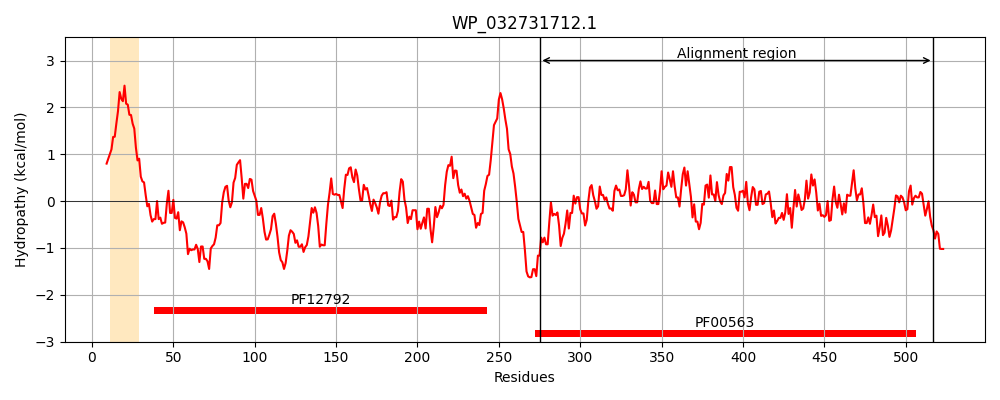
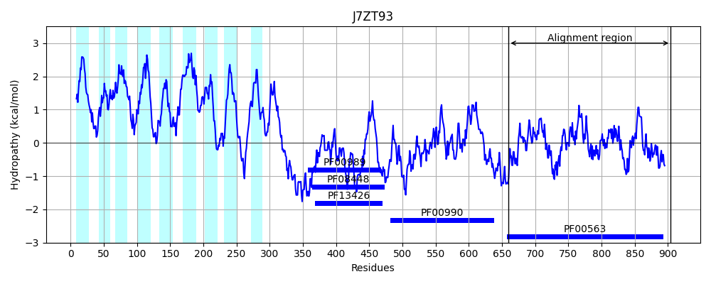
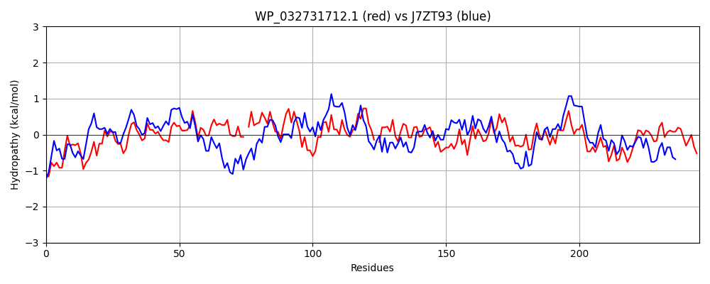

Hit Accession: J7ZT93
Hit TCID: 9.B.34.1.5
Hit Description: gnl|BL_ORD_ID|5486 gnl|TC-DB|J7ZT93|9.B.34.1.5 Diguanylate cyclase (GGDEF) domain-containing protein OS=Bacillus cereus HuA2-4 GN=IG7_01488 PE=4 SV=1
Mach Len: 245
e:0.000000
Query TMS Count : 1
Hit TMS Count: 9
TMS-Overlap Score: 0.000000
Predicted Substrates:None
BLAST Alignment:
Score: 365 , Bit scores: 145 bits, E-value: 8.6e-37, Alignment length: 245, Percentage identity: 35
Query: 275 LQRALSCRQLRLHYQPIIDIKNNRCVGAEALLRWPGFDGPVMNPAEFIPLAENEGMIAQITDYVVDELFYEMGEF-LASHPQLYVAINLSASDFHSARLISQISEKAHSYAVCIGQIKIEVTER-GFIDVAKTTPVIQAFREAGYEIAIDDFGTGYSNLHNLHALNVDILKIDKTFVDTLTTNNTSHLIAEHIIEMARGLRLKTIAEGVETPEQVSWLYKRGVQFCQGWLFAKAMPAREFMQWLA 517
L +AL +L L YQP +D K +GAEAL+RW + +++P EFIP+AE I I + + E ++ E+ A + L + INLSA +F + I V I +E+TER +D +T ++A + G ++IDDFGTGYS+L L +D LKI + FV+ + + + I II +A L +K IAEGVET EQ++ L + QG+ ++K + EF+++L+
Sbjct: 660 LPKALENNELFLLYQPQVDSKTGMVIGAEALIRWQHPELGLISPFEFIPIAEETSQIISIGKWTLQEACRQLKEWHSAGYVNLKMGINLSAIEFEQKDFVQAIISTIEEVGVPASSIDLELTERIAMVDEKETLAKLKALKSYGVHLSIDDFGTGYSSLAYLPLYPIDTLKIPREFVNRIGNSTDGNEIIHTIISLAHTLNMKVIAEGVETKEQLTVLQRNACYLIQGYYYSKPVSEDEFIKFLS 904 | Protein Hydropathy Plots: |
|---|
|  |  |
Pairwise Alignment-Hydropathy Plot:
|
|---|
|  |